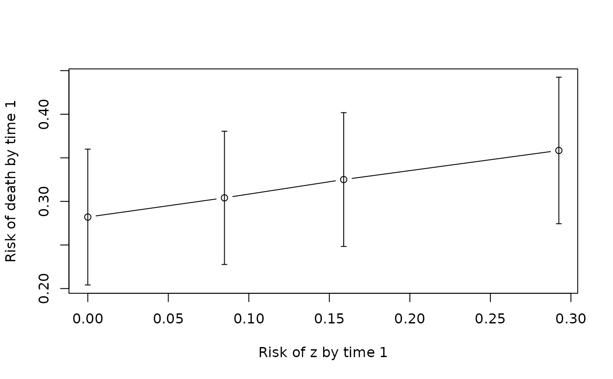

Trace the intervention curve over a grid of intensity scalings
Source:R/intervention-curve.R
intervention_curve.RdFor each scaling alpha of the intensity of the exposure process,
estimates the exposure and the target under scale_intensity() with
that alpha. Plotting the target estimates against the exposure
estimates traces out how the target responds to changes in the exposure
on its own scale, such as its risk. The standard errors of the target
estimates account for calibrating to the estimated exposure rather than
to alpha, as in calibrate().
Arguments
- initial_fit
An initial fit, as returned by
fit_initial().- target
The target parameter:
risk()oryears_lost()of one or more processes.- exposure
The exposure:
risk()oryears_lost()of the single process whose intensity is scaled.- alpha
Non-negative numeric vector. The scalings to evaluate.
- a
Optional baseline treatment value (
0or1) to intervene on. Must be one of thearmsprepared byfit_initial().- control
A named list of settings for how the estimate is computed:
one_step(FALSE): ifTRUE, return the one-step estimator instead of iterating the TMLE update.block_size(10): positive integer. Foryears_lost(), the integral is approximated by evaluating the risk once per block ofblock_sizeconsecutive time points.1gives the exact integral of the estimated risk; the computation time is roughly proportional to1 / block_size.target_by_state(FALSE): ifTRUE, use state-specific clever covariates in the targeting step.conv_const(1): positive number. The TMLE iterations stop when the absolute mean of the efficient influence curve falls belowconv_const * se / log(n).max_iter(10): maximum number of TMLE iterations.min_iter(0): minimum number of TMLE iterations before checking convergence.truncate_weights(Inf): positive number at which the clever weights of the intervention are truncated.Infis no truncation.
- cores
Positive integer. Number of cores used by
parallel::mclapply()for the per-individual computations.- verbose
Logical. If
TRUE, print progress.
Value
An object of class intervention_curve, a list with elements:
estimate: adata.tablewith one row per value ofalphaand target process, and columnsalpha,target, the exposure (exposure_estimate, with standard errorexposure_se), and the target (estimate, with standard errorseand the boundslowerandupperof a 95% Wald confidence interval).target,exposureanda: as given.checks: adata.tablewith the estimated derivatives with respect toalphaof the exposure (derivative_exposure) and target (derivative_target) estimates, peralphaand target process.eic: a list with, per value ofalpha, the influence curves of the exposure estimate (exposure_eic), ofalphacalibrated to it (alpha_eic), and lists named by target process of the target estimates accounting for its calibration (eic) and treatingalphaas known (eic_alpha_known), as intmle_estimate().
Examples
fit <- fit_initial(
illness_death,
models = list(
hazard_model(z ~ L0, limit = 1),
death ~ L0 + z,
censoring ~ L0
),
tau = 1
)
# \donttest{
# How the risk of death responds to the risk of z, as the intensity of z
# is scaled from 0 (no illness) to 2 (twice the observed intensity):
curve <- intervention_curve(
fit,
risk(death),
exposure = risk(z),
alpha = c(0, 0.5, 1, 2)
)
curve
#> Intervention curve of risk(death) against risk(z)
#> over 4 scalings of the intensity of z
#>
#> alpha target exposure_estimate exposure_se estimate se lower
#> <num> <char> <num> <num> <num> <num> <num>
#> 1: 0.0 death 0.00000000 0.00000000 0.2820265 0.03975707 0.2041041
#> 2: 0.5 death 0.08486244 0.01787691 0.3040549 0.03899060 0.2276348
#> 3: 1.0 death 0.15891283 0.03132140 0.3250469 0.03915660 0.2483014
#> 4: 2.0 death 0.29250854 0.04980121 0.3584115 0.04287637 0.2743753
#> upper
#> <num>
#> 1: 0.3599489
#> 2: 0.3804751
#> 3: 0.4017924
#> 4: 0.4424476
# Plot the risk of death against the risk of z, with 95% confidence
# intervals:
est <- curve$estimate
plot(
est$exposure_estimate,
est$estimate,
type = "b",
ylim = range(est$lower, est$upper),
xlab = "Risk of z by time 1",
ylab = "Risk of death by time 1"
)
arrows(
est$exposure_estimate,
est$lower,
est$exposure_estimate,
est$upper,
angle = 90,
code = 3,
length = 0.03
)

# }